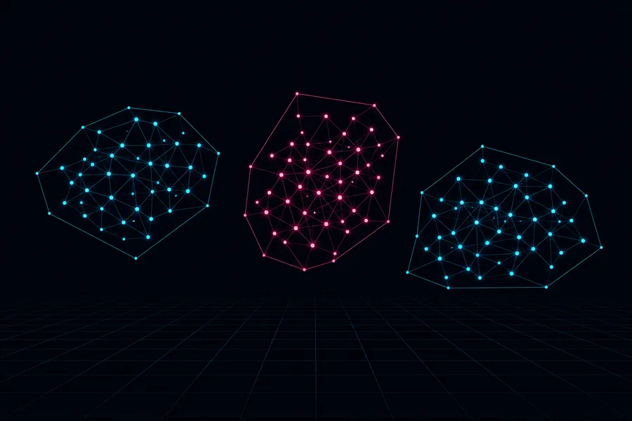
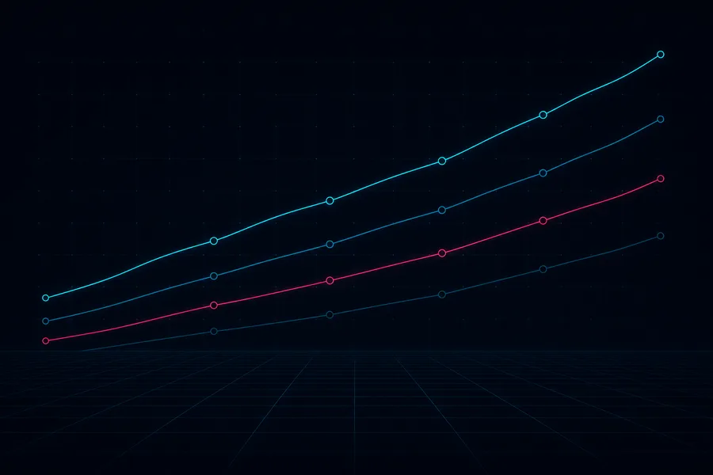

Five hours to forty‑five minutes.
That's how long patient-care data now takes to land at Ballad Health. I build cloud-native pipelines for healthcare, banking, and e-commerce — and the quality, governance, and observability layers that decide whether anyone trusts what comes out the other end.
35M
Healthcare and claims events processed each month
1,200+
Clinicians, analysts, and operational teams served by the platform
45%
Reduction in mean time to recovery on critical pipelines
Approach
What I actually do
I design the layer between raw operational data and the people who have to act on it: batch and streaming ETL, lakehouse architecture, and the data quality and governance work that decides whether the output gets trusted or quietly worked around.
Most of that has been in healthcare, where a late number or a wrong join has consequences beyond a dashboard. It shapes how I build — observability from the start, reconciliation by default, and pipelines that fail loudly instead of silently passing bad data downstream.
Lately it also includes AI-assisted data engineering: retrieval-augmented search over clinical documentation, automated metadata discovery. The hard part there isn't getting a model to answer. It's governing the data underneath well enough that the answer is worth having.
- Lakehouse architecture
- Streaming and batch pipelines
- Data quality and governance
- AI-assisted data products
Work
Where the pipelines run
-
Oct 2025 — Present
Ballad Health
United States
Data Engineer
Architecting cloud-native healthcare data platforms that consolidate EHR, claims, and clinical datasets into AI-ready lakehouse architectures.
- Cut end-to-end data latency from five hours to under 45 minutes for patient-care analytics, across 35 million healthcare events a month.
- Improved data availability for more than 1,200 clinicians, analysts, and operational teams.
- Reduced MTTR on critical pipelines by 45% and cloud infrastructure cost by 28% through governance, observability, and Spark workload tuning.
- Built AI-assisted clinical data discovery with RAG, LangChain, and Claude, cutting manual investigation effort by 40%.
AWS · Databricks · PySpark · Delta Lake · Snowflake · Airflow · Great Expectations · Unity Catalog
-
Jul 2025 — Sep 2025
Elevance Health
United States
Data Engineer Intern
Built ETL workflows for member claims, eligibility, and healthcare transaction datasets supporting regulatory reporting across multiple health plan systems.
- Automated reconciliation and SQL query optimisation, cutting manual validation effort by 30%.
- Built HIPAA-aligned data quality and compliance checks across member and claims datasets.
Python · AWS Glue · S3 · Snowflake · Great Expectations
-
Jan 2021 — Jul 2023
Mphasis
India
Data Engineer
Delivered batch and real-time pipelines for customer, order, inventory, and seller datasets powering enterprise-wide analytics and operational reporting.
- Processed more than 120 million e-commerce events daily through Spark Structured Streaming and Delta Lake.
- Reduced end-to-end pipeline execution time by 38% by modernising legacy batch workflows onto AWS.
- Established automated data quality, metadata management, and CI/CD deployment to cut production defects.
Spark · Kafka · Hive · Hadoop · EMR · Redshift · PostgreSQL · Terraform · Jenkins
Repositories
Public code
Smaller analytics builds where the code is open to read. Production work sits in private company repositories.
Retail data analytics
Python and SQL working together across a retail analytics workflow, from raw transactions to reportable measures.
Python · SQL · Jupyter
View repository
Customer segmentation
Segmenting customer data into groups that a marketing or product team can actually act on.
Python · Jupyter
View repository
Customer trends analysis
SQL, Python, and Power BI combined to trace customer behaviour trends over time.
SQL · Python · Power BI
View repositoryCredentials
Certified where it counts
Epic certifications
- Caboodle Data Model
- Clarity Data Model
- Cogito
- Clinical Data Model
- Revenue Data Model
Also certified
- CompTIA Security+
- Google Data Analytics
Education
- MS, Information SystemsEast Tennessee State University · May 2025
- Bachelor of Computer ApplicationsAmity University · May 2022
Toolkit
Tools, grouped by job
- Languages
- Python, SQL, PySpark
- Processing & streaming
- Apache Spark, Spark Structured Streaming, Kafka, Delta Lake, Hive, Hadoop
- Platforms & storage
- Databricks, Snowflake, AWS (S3, Glue, Lambda, EMR, CloudWatch), Redshift, PostgreSQL
- Orchestration & DevOps
- Airflow, Docker, Kubernetes, Terraform, Jenkins, GitHub Actions, CI/CD
- Governance & quality
- Great Expectations, Unity Catalog, data lineage, metadata management, MTTR reduction
- AI & analytics
- OpenAI API, Claude AI, LangChain, RAG, vector embeddings, Power BI
Contact
Open to data engineering roles
jigyasa17034@gmail.comUsually replies within one business day.